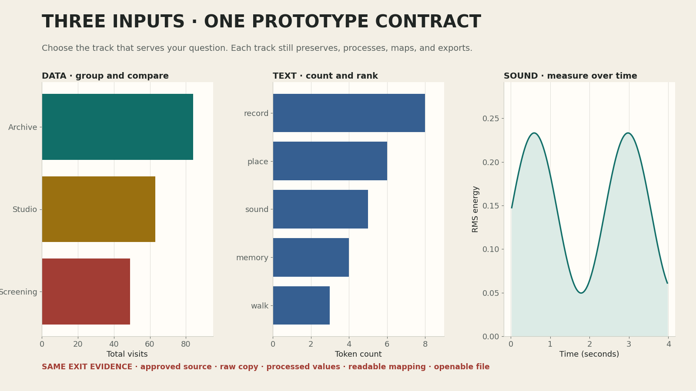

한 질문, 한 입력, 한 규칙, 한 시각화, 한 파일을 끝까지 연결하기
오늘의 실습 목표
- 승인된 자신의 입력 또는 수업 제공 입력 가운데 하나를 안전하게 불러올 수 있습니다.
- 입력의 원본을 별도 변수와 지문으로 보존하고 처리 전후의 수량을 출력할 수 있습니다.
- 데이터 집계, 텍스트 빈도, 소리 RMS 가운데 질문에 필요한 처리 규칙 하나를 실행할 수 있습니다.
- 처리 값을 막대 길이 또는 시간·에너지 위치에 연결한 핵심 시각화 한 화면을 만들 수 있습니다.
- 관찰, 한계, 15주차 수정 두 가지를 구체적인 문장으로 기록할 수 있습니다.
- 새 런타임의 모두 실행에서 자동 검사 PASS를 받고 노트북과 1600 × 1000 PNG를 제출할 수 있습니다.
자동 검사 PASS + 결과 파일 열림 + 출처 확인 + 교수 범위 확인 + 필수 파일 제출 = 즉시 귀가
0-5분의 공통 안내가 끝나면 각자 자신의 속도로 진행합니다. 마지막 셀의 완료 문구, 노트북 밖에서 열리는 PNG, 출처와 이용 근거, 1차 면담 판정, 제출 파일을 모두 확인받은 학생은 수업 종료 시각을 기다리지 않고 귀가할 수 있습니다.
속도는 평가 기준이 아닙니다. 작업 속도와 남은 수업 시간은 평가에 반영하지 않습니다. 빠른 장식보다 원본 보존, 처리 값과 화면의 일치, 재실행 가능성, 책임 있는 자료 이용을 먼저 증명합니다.
- 01사본파일명과 면담 판정
- 02카드질문·독자·출처
- 03입력경로·모드·원본 보존
- 04처리집계·빈도·RMS
- 05표현막대 또는 선
- 06해석관찰·한계·다음 행동
- 07저장1600 × 1000 PNG
- 08검증새 런타임 PASS
- 09제출파일·출처·교수 확인
EXIT GATE
재현되는 핵심 경로와 열리는 결과 파일
자동 검사는 입력 보존, 처리 값, 화면 요소, 파일 규격을 확인합니다. 교수는 질문과 입력의 대응, 자료 이용 권한, 승인된 범위, 실제 가독성을 확인합니다. 두 검토를 모두 통과해야 완료입니다.
먼저 내려받을 노트북과 결과 경로
{kind=link}
{kind=link}

막히면 제공 자료로 먼저 완전한 경로를 만듭니다
노트북에는 9행 가상 데이터, 교수자 창작 짧은 텍스트, 4초 합성 사운드가 포함되어 있습니다. input_mode = "provided"를 유지하면 외부 파일 없이 실행됩니다. 자신의 자료가 승인되지 않았거나 형식이 맞지 않으면 제공 자료로 전환해 같은 학습 목표를 수행합니다.
귀가 조건: 제출 전에 열세 가지 확인
- 01
면담 판정승인, 범위 축소 후 승인, 대체 자료 전환 가운데 자신의 판정을 확인했습니다.
- 02
제출 정보실제 학번과 이름을 입력하고 안전한 파일명을 사용합니다.
- 03
프로젝트 카드질문, 예상 독자, 출처, 이용 근거, 제외 기능, 시각화 규칙을 모두 자신의 문장으로 작성했습니다.
- 04
입력 선택
data,text,sound가운데 하나와provided또는own모드를 정확히 선택했습니다. - 05
원본 보존원본 사본과 SHA-256 지문이 남고 실행 중 입력이 바뀌지 않습니다.
- 06
처리 결과집계·빈도·RMS 가운데 한 규칙을 실행하고 처리 전후 수량을 출력합니다.
- 07
시각적 매핑막대 길이 또는 선의 x·y 값이 실제 처리 결과와 일치합니다.
- 08
기본 가독성축 이름, 단위, 레이블과 핵심 표시가 잘리지 않고 읽힙니다.
- 09
관찰결과에서 직접 확인한 수치나 변화가 포함된 한 문장을 작성했습니다.
- 10
한계현재 입력만으로 단정할 수 없는 내용을 한 문장으로 작성했습니다.
- 11
15주차 행동서로 다른 구체적인 수정 두 가지를 기록했습니다.
- 12
출력·재현1600 × 1000 PNG가 열리고 새 런타임 모두 실행에서 완료 문구가 보입니다.
- 13
교수 확인·제출질문-입력, 이용 권한, 범위, 가독성을 확인받고 필수 파일을 제출했습니다.
자동 검사의 범위
자동 검사는 프로젝트의 의미와 미적 완성도를 대신 평가하지 않습니다. 입력 지문, 처리 값, 막대 길이 또는 선 데이터, 문장 길이, 파일 존재와 크기를 확인합니다. 질문이 입력으로 답할 수 있는지, 이용 권한 설명이 사실인지, 화면이 실제로 읽히는지는 교수가 별도로 확인합니다.
50분 진행 기준
- 0-5분미션 계약
귀가 조건, 세 경로, 제출 파일을 확인합니다.
- 5-12분사본·카드
파일명을 바꾸고 STEP 1의 여섯 문장을 편집합니다.
- 12-22분입력·처리
원본을 보존하고 집계·빈도·RMS 결과를 확인합니다.
- 22-32분핵심 시각화
처리 값을 막대 길이 또는 선 위치에 연결합니다.
- 32-38분저장·육안 점검
1600 × 1000 PNG를 열어 잘림을 확인합니다.
- 38-44분새 런타임 검증
모두 실행하고 자동 검사 PASS를 받습니다.
- 44-48분해석·교수 확인
관찰·한계·수정 두 가지와 범위를 확인받습니다.
- 48-50분제출·귀가
필수 파일을 제출하고 완료 확인 뒤 귀가합니다.
시간은 순서를 놓치지 않기 위한 기준입니다. 앞 단계가 빨리 끝나면 즉시 다음 단계로 이동합니다. 오류가 생기면 아래 문제 해결 항목에서 현재 STEP을 찾고, 그래도 해결되지 않으면 오류 문장 전체와 해당 STEP 번호를 교수에게 보여 줍니다.
준비 · 노트북 사본과 제출 파일명 만들기
- 실습 노트북을 내려받아 Google Colab에서 엽니다.
- 파일 → Drive에 사본 저장을 선택합니다.
- 노트북 이름을
week14_학번_이름_prototype.ipynb로 바꿉니다. - 2교시 면담 판정이 승인, 범위 축소 후 승인, 대체 자료 전환 중 무엇인지 확인합니다.
- 처음에는 STEP 0부터 STEP 7까지 한 번 실행해 제공 경로의 구조를 봅니다.
EDIT:문장 때문에 최종 검사가 실패하는 것은 정상입니다.
Drive 사본의 파일명에 실제 학번과 이름이 있고, 면담에서 정한 경로와 입력 모드를 알고 있습니다.
Colab에서 노트북이 열리지 않을 때
Colab을 먼저 연 뒤 파일 → 노트북 업로드에서 내려받은 .ipynb를 선택합니다. 브라우저가 JSON 글자를 보여 주는 탭에서는 편집하지 않습니다.
STEP 0에서 패키지 설치가 오래 걸릴 때
노트북은 필요한 버전이 없을 때만 NumPy, pandas, Matplotlib, Pillow를 설치합니다. 설치가 끝날 때까지 다음 셀을 따로 실행하지 않습니다. 세션 다시 시작 안내가 나타나면 다시 시작한 뒤 모두 실행합니다.
한글 글꼴 설치 뒤에도 글자가 네모로 보일 때
STEP 0이 한글 글꼴 이름을 출력했는지 확인합니다. 이전에 그린 Figure는 자동으로 바뀌지 않으므로 런타임 → 세션 다시 시작 후 STEP 0부터 모두 실행합니다.
STEP 1 · 프로젝트 카드와 경로 선택
STEP 1은 오늘 수정하는 첫 번째 코드 셀입니다. 학번, 이름, 경로, 입력 모드와 여섯 문장을 편집합니다. 따옴표, 변수 이름, 등호는 지우지 않고 따옴표 안의 값만 바꿉니다.
student_id = "20261234"
student_name = "김프로토"
project_track = "data"
input_mode = "provided"
own_source_filename = ""
project_question = "세 공간의 기록 합계는 어떻게 다른가?"
intended_audience = "학과 공간을 처음 이용하는 학생"
project_source = "Contents Programming Practice Week 14 교수자 제공 가상 자료"
usage_rights = "수업 실습과 제출을 위해 제공된 가상 자료"
scope_decision = "이번 주에는 지도와 인터랙티브 필터를 구현하지 않는다"
visual_rule = "공간 범주를 세로 위치에, 기록 합계를 막대 길이에 연결한다"| 값 | 제공 입력 | 처리 규칙 | 기본 출력 |
|---|---|---|---|
data | category, value 열의 9행 가상 표 | 범주별 합계 | 막대 3개 |
text | 교수자 창작 영문 28토큰 | 정규화한 상위 단어 빈도 | 최대 막대 8개 |
sound | 8,000Hz·4초 합성 신호 | 50밀리초 프레임별 RMS | 159개 에너지 값의 선 |
자신의 자료가 면담에서 승인되었다면 input_mode = "own"으로 바꾸고 own_source_filename에 같은 Colab 세션에 업로드한 파일명을 적습니다. 승인이 없거나 형식이 다르면 provided를 유지합니다.
| 경로 | 허용 파일 | 필수 구조 | 업로드 전 확인 |
|---|---|---|---|
| 데이터 | UTF-8 CSV | category, value 열; value는 숫자 | 개인정보 제거, 열 이름, 이용 조건 |
| 텍스트 | UTF-8 TXT | 분석할 짧은 본문 한 개 | 저작권 또는 직접 작성, 인코딩 |
| 사운드 | 모노 16-bit PCM WAV | 한 채널의 짧은 소리 | 직접 생성·녹음 또는 허가, 대화 제거 |
project_track 오류가 날 때
"data", "text", "sound" 가운데 하나를 소문자로 정확히 입력합니다. 한글 경로명이나 앞뒤 공백을 넣지 않습니다.
input_mode 오류가 날 때
외부 파일 없이 진행하면 "provided", 승인된 자신의 파일을 업로드했다면 "own"을 입력합니다. 자신의 자료가 준비되지 않았는데 own을 선택하지 않습니다.
질문 길이 또는 물음표 검사가 실패할 때
EDIT:를 지우고 15~70자의 한 줄로 작성합니다. 마지막은 ? 또는 ？로 끝냅니다. “무엇을 만들까?”보다 현재 입력의 차이·분포·반복·변화를 묻습니다.
자료 출처와 이용 근거의 차이는 무엇인가?
출처는 자료가 어디서 왔는지 설명하고, 이용 근거는 왜 분석·변형·제출할 수 있는지 설명합니다. “기관명과 원본 주소”는 출처이고, “CC BY 조건 확인”, “직접 제작”, “수업용 제공 자료”는 이용 근거입니다.
STEP 2 · 승인된 입력을 불러오고 원본 보존하기
STEP 2는 선택한 경로와 입력 모드에 따라 입력을 불러옵니다. 제공 자료는 코드 안에서 만들어지며, 자신의 자료는 같은 세션에 업로드한 파일을 읽습니다. 이 셀은 원본 사본과 SHA-256 지문을 남깁니다. 지문은 파일 내용이 바뀌면 달라지는 긴 문자열로, 실행 중 원본이 그대로였는지 확인하는 표식입니다.
데이터STEP 2 PASS · data 원본 보존 · digest …
텍스트STEP 2 PASS · text 원본 보존 · digest …
사운드STEP 2 PASS · sound 원본 보존 · digest …
데이터 경로는 raw_data와 raw_snapshot, 텍스트 경로는 raw_text와 raw_snapshot, 사운드 경로는 raw_signal과 raw_snapshot을 만듭니다. 뒤 셀에서 원본을 직접 바꾸면 최종 검사가 실패합니다.
STEP 2의 마지막 줄에 선택 경로와 원본 보존 PASS가 보이고, own 모드라면 업로드한 파일명과 코드의 철자·확장자가 정확히 같습니다.
지정한 파일을 찾을 수 없다고 나올 때
Colab 왼쪽 파일 패널에 원본이 보이는지 확인하고, 파일명을 복사해 own_source_filename의 따옴표 안에 붙입니다. Drive의 파일은 세션에 자동 업로드되지 않을 수 있습니다.
CSV에 category와 value 열이 없다고 나올 때
파일의 첫 줄이 정확히 category,value인지 확인합니다. 자신의 원본 열 이름을 임의로 바꾸기 전에 복사본을 만들고, 면담에서 합의한 관찰 단위와 값이 맞는지 확인합니다. 시간이 부족하면 제공 자료로 전환합니다.
TXT를 UTF-8로 읽을 수 없다고 나올 때
텍스트 편집기에서 복사본을 UTF-8로 다시 저장합니다. 원본을 덮어쓰지 않습니다. 인코딩 변환이 어렵거나 이용 권한이 불분명하면 제공 텍스트로 전환합니다.
WAV가 모노 또는 16-bit PCM이 아니라고 나올 때
원본을 보존한 뒤 오디오 편집 도구에서 별도 복사본을 모노 16-bit PCM WAV로 내보냅니다. 수업 시간 안에 변환하기 어렵다면 제공 사운드를 사용합니다.
STEP 3 · 처리 규칙 하나와 전후 수량 확인하기
STEP 3은 경로별로 하나의 처리 규칙을 실행합니다. 이 셀은 수정하지 않습니다. 콘솔에 입력 수량과 처리 결과 수량이 함께 출력되므로, 무엇이 줄거나 묶였는지 말로 설명할 수 있어야 합니다.
| 경로 | 입력 | 처리 | 기대 출력 |
|---|---|---|---|
| 데이터 | 9행, 세 범주 | 범주별 value 합산 | Archive 84, Studio 63, Screening 49 |
| 텍스트 | 28토큰 | 소문자 정규화와 빈도 순위 | record 8회, 상위 단어 최대 8개 |
| 사운드 | 32,000샘플, 4초 | 400샘플 프레임, 200샘플 이동의 RMS | 159개 에너지 값 |
data입력 9행 → 범주 3개
text입력 28토큰 → 상위 단어 7개
sound입력 32000샘플 → 에너지 구간 159개
데이터의 value를 숫자로 바꿀 수 없다고 나올 때
value 열에 “없음”, 쉼표가 포함된 문자열, 단위가 붙은 값이 있는지 확인합니다. 어떤 값을 결측으로 처리할지 임의로 정하지 말고 면담 범위를 다시 확인하거나 제공 자료로 전환합니다.
텍스트 결과에 조사나 일반 단어가 너무 많이 보일 때
이번 30% 경로는 토큰화와 빈도 연결이 작동하는지 확인하는 단계입니다. 불용어 목록은 15주차 보완 항목으로 기록할 수 있습니다. 지금 처리 코드를 크게 바꾸다 핵심 경로를 잃지 않습니다.
소리가 너무 짧아 에너지를 계산할 수 없다고 나올 때
현재 프레임은 약 50밀리초입니다. 입력이 이보다 짧으면 분석 구간이 만들어지지 않습니다. 더 긴 승인 파일을 사용하거나 제공 4초 신호로 전환합니다.
STEP 4 · 처리 값을 막대 길이 또는 선 위치에 연결하기
STEP 4는 데이터와 텍스트 경로에서 processed_values를 막대 길이에 연결하고, 사운드 경로에서 processed_times와 processed_values를 선의 가로·세로 위치에 연결합니다. 기본 화면은 장식이 아니라 처리 규칙이 실제로 보이는지 확인하는 증거입니다.
# 데이터·텍스트 경로
visual_artists = axis.barh(
processed_labels,
processed_values,
)
# 사운드 경로
(visual_artist,) = axis.plot(
processed_times,
processed_values,
)코드의 변수 이름을 읽어 봅니다. 막대의 레이블과 길이는 처리 셀에서 만든 값이고, 선의 x와 y 역시 처리 시간과 에너지 값입니다. 최종 검사는 Matplotlib 안에 저장된 실제 막대 길이와 선 데이터를 다시 꺼내 처리 결과와 비교합니다.
데이터·텍스트 경로는 막대 수와 처리 항목 수가 같고 0에서 시작합니다. 사운드 경로는 가로축이 초, 세로축이 RMS 에너지이며 빈 선이 아닙니다.
그래프는 보이는데 순서가 예상과 다를 때
데이터는 작은 값에서 큰 값으로 정렬해 가로 막대가 아래에서 위로 읽히고, 텍스트는 상위 빈도를 선택한 뒤 표시 순서를 뒤집습니다. 값이 맞다면 정렬 방향은 오류가 아닙니다. 15주차에 독자의 읽기 흐름에 맞게 조정할 수 있습니다.
막대 수는 맞지만 값이 잘못 보일 때
STEP 4의 색상이나 글꼴이 아니라 STEP 3의 processed_values를 먼저 출력합니다. 콘솔 값과 막대 끝의 숫자가 다르면 시각화 변수를, 둘 다 예상과 다르면 입력과 처리 규칙을 확인합니다.
사운드 선이 거의 평평하게 보일 때
일정한 크기의 소리는 RMS 변화가 작을 수 있습니다. 빈 결과가 아니며 실제 입력 특성이라면 오류가 아닙니다. 선을 과장하려고 축을 임의로 잘라 결론을 만들지 말고, 관찰과 한계에 변화가 작다는 점을 기록합니다.
STEP 5 · 관찰, 한계, 15주차 행동 두 가지 작성하기
STEP 5는 오늘 수정하는 두 번째 코드 셀입니다. 네 문장 모두 EDIT:를 지우고 한 줄로 작성합니다. 관찰과 한계는 결과 화면에서 읽을 수 있도록 20~70자, 다음 행동은 각각 12~120자로 작성합니다.
main_observation = (
"Archive의 기록 합계는 84로 세 범주 가운데 가장 크다."
)
limitation_statement = (
"가상 기록에는 이용 인원과 공간 크기가 없어 이용률을 판단할 수 없다."
)
next_step_1 = "축 이름을 한국어로 바꾸고 기록 단위를 제목 아래에 추가한다."
next_step_2 = "세 막대의 색 대비를 확인하고 출처 영역을 별도로 배치한다."| 문장 종류 | 수정이 필요한 문장 | 사용 가능한 문장 | 차이 |
|---|---|---|---|
| 관찰 | 막대가 다르게 보인다. | Archive 합계 84는 Screening 합계 49보다 35 크다. | 화면에서 확인할 이름과 수치 포함 |
| 한계 | 데이터가 부족하다. | 관찰 기간이 없어 합계가 어느 기간의 기록인지 비교할 수 없다. | 빠진 정보와 불가능한 판단 명시 |
| 다음 행동 | 더 예쁘게 만든다. | 축 단위를 제목 아래에 추가하고 긴 레이블의 왼쪽 여백을 넓힌다. | 수정 대상과 동작이 구체적 |
관찰 문장 검사가 실패할 때
EDIT:를 지우고 20자 이상 한 줄로 씁니다. “재미있다”, “아름답다”는 화면의 데이터 근거가 아니므로 이름, 값, 시간 또는 빈도를 포함합니다.
한계와 오류는 같은 말인가?
오류는 코드나 데이터가 의도대로 작동하지 않는 문제입니다. 한계는 결과가 정확히 작동해도 현재 자료와 방법만으로 답할 수 없는 범위입니다. “파일이 열리지 않는다”는 오류이고 “이용자의 만족도를 알 수 없다”는 한계입니다.
다음 행동 두 문장을 다르게 썼는데 실패할 때
각 문장이 12자 이상인지, EDIT:가 남지 않았는지, 줄바꿈이 없는지 확인합니다. 두 문장은 정확히 같은 문자열이면 안 되며 서로 다른 수정 대상을 다루는 것이 좋습니다.
STEP 6 · 1600 × 1000 PNG 저장하고 직접 열기
STEP 6은 학번과 이름을 안전한 파일명 조각으로 바꾸고 week14_학번_이름_preview.png를 저장합니다. 관찰과 한계 문장도 Figure 아래에 배치합니다. 셀 출력만 보지 말고 왼쪽 파일 패널에서 PNG를 직접 엽니다.
- 파일명이
week14_학번_이름_preview.png형식인지 확인합니다. - 이미지가 빈 화면이 아니고 막대 또는 선이 보이는지 확인합니다.
- 긴 범주·단어 레이블과 관찰·한계 문장이 잘리지 않는지 확인합니다.
- 데이터·텍스트의 막대 끝 숫자 또는 사운드의 축 단위가 읽히는지 확인합니다.
- 다운로드한 파일도 컴퓨터의 기본 이미지 뷰어에서 열리는지 확인합니다.
파일 패널과 다운로드 폴더에서 같은 PNG가 열리며 크기는 정확히 1600 × 1000픽셀입니다. 글자 잘림이 있으면 저장을 반복하기 전에 Figure 여백과 문장 길이를 확인합니다.
파일명이 week14_--_preview.png처럼 보일 때
STEP 1의 학번과 이름이 실제 값인지 확인하고 STEP 1, STEP 6을 차례로 다시 실행합니다. 슬래시, 역슬래시, 물음표 같은 파일명에 사용할 수 없는 문자는 넣지 않습니다.
PNG는 생겼지만 관찰 문장이 이전 내용일 때
STEP 5를 수정한 뒤 실행하지 않고 STEP 6만 실행하면 오래된 변수 값이 남을 수 있습니다. 가장 안전한 방법은 새 런타임에서 모두 실행해 최종 파일을 다시 만드는 것입니다.
PNG 파일 용량이 너무 작거나 빈 화면일 때
STEP 4에서 Figure가 실제로 생성되었는지, STEP 6이 같은 figure 변수를 저장하는지 확인합니다. 셀 실행 순서가 섞였다면 새 런타임에서 모두 실행합니다.
STEP 7 · 새 런타임 모두 실행과 FINAL CHECK
- 작업 내용을 저장합니다.
- 런타임 → 세션 다시 시작을 선택합니다.
- 런타임 → 모두 실행을 선택합니다.
- STEP 0부터 STEP 7까지 위에서 아래로 실행되는 동안 중간 셀을 따로 누르지 않습니다.
- 마지막 출력에서 완료 문구, 선택 경로, 입력 모드, PNG 파일명을 확인합니다.
- 다시 생성된 PNG를 열어 최종 육안 점검을 합니다.
완료WEEK 14 PROJECT PROTOTYPE COMPLETE
경로TRACK · data / INPUT · provided
교수 확인질문-입력 대응 / 이용 권한 / 범위 / 가독성
FINAL CHECK 코드는 수정하지 않습니다. 오류 문장은 어느 조건이 충족되지 않았는지 알려 줍니다. 메시지를 읽고 해당 STEP으로 돌아간 뒤 수정하고, 마지막에는 다시 새 런타임에서 모두 실행합니다.
실행 순서 오류가 날 때
여러 셀을 따로 다시 실행하면 _run_order 목록이 기대 순서와 달라집니다. 세션을 다시 시작하고 STEP 0부터 모두 실행합니다. FINAL CHECK만 반복 실행하지 않습니다.
원본이 변경되었다는 오류가 날 때
raw_data, raw_text, raw_signal을 직접 수정한 셀이 있는지 확인합니다. 정리나 변형에는 별도 작업 변수를 사용해야 합니다. 제공 자료 코드를 바꿨다면 원본 노트북 사본에서 다시 시작합니다.
막대 길이나 선 데이터가 일치하지 않는다고 나올 때
그래프를 그릴 때 processed_values, processed_times 대신 다른 변수를 사용했는지 확인합니다. 30% 경로에서는 시각적 효과보다 처리 결과와 실제 화면 요소의 일치를 유지합니다.
PNG 크기가 1600 × 1000이 아니라고 나올 때
STEP 4의 figsize=(8, 5)와 STEP 6의 dpi=200을 유지합니다. 두 값을 곱하면 1600 × 1000픽셀이 됩니다. 브라우저 화면의 표시 크기와 파일의 실제 픽셀 크기는 다릅니다.
교수 범위 확인 · 60–90초
자동 검사 PASS 화면, 열린 PNG, 프로젝트 카드가 보이는 STEP 1, 관찰·한계·다음 행동이 보이는 STEP 5를 준비합니다. 교수에게 아래 네 항목을 순서대로 보여 줍니다.
- 질문-입력: 현재 입력으로 질문에 답할 수 있는가?
- 이용 권한: 출처와 분석·변형·제출 근거가 확인되는가?
- 범위: 승인된 핵심 경로가 작동하고 확장 기능이 분리되었는가?
- 가독성: 화면의 막대 또는 선, 축, 관찰과 한계가 실제로 읽히는가?
교수 확인에서 수정이 필요한 경우
프로젝트 전체를 다시 만들지 않습니다. “질문을 현재 입력으로 답할 수 있게 좁히기”, “외부 입력을 제공 자료로 바꾸기”, “긴 문장을 줄여 잘림 해결”, “축 단위 추가”처럼 확인받은 한 항목만 수정한 뒤 새 런타임 모두 실행을 다시 진행합니다.
제출 · 필수 파일 확인 후 즉시 귀가
필수 1 · 실행 결과가 남은 노트북week14_학번_이름_prototype.ipynb
필수 2 · 열리는 미리보기week14_학번_이름_preview.png
조건부 3 · 자신의 입력을 사용한 경우week14_학번_이름_source.확장자
input_mode = "provided"이면 입력이 노트북 안에 있으므로 두 파일만 제출합니다. own이면 승인된 원본 파일을 제출용 이름으로 복사해 함께 제출합니다. 노트북을 내려받기 전에 마지막 완료 출력과 그래프가 저장되어 있는지 확인합니다.
최종 귀가 확인
자동 검사 PASS, PNG 직접 열림, 출처와 이용 근거 확인, 교수의 질문·범위·가독성 확인, 필수 파일 제출이 모두 완료되면 즉시 귀가합니다. 선택 확장을 하지 않아도 불이익이 없고, 남은 시간은 평가에 반영하지 않습니다.
선택 확장 · 같은 입력의 두 번째 표현을 비교하기
필수 결과를 별도 파일로 보존하고 제출까지 마친 학생만 진행합니다. 같은 입력과 처리 결과를 다른 그래프나 시각 규칙으로 표현하되, 새 표현이 기존 결과에서 보이지 않던 무엇을 보여 주는지 비교합니다.
- 필수 PNG를 덮어쓰지 않고 노트북 사본과 새 출력 파일을 만듭니다.
- 질문과 입력, 처리 값은 그대로 유지합니다.
- 막대 정렬, 점 표현, 색상 또는 두 번째 Axes 가운데 한 가지 표현만 바꿉니다.
- 두 결과의 장점과 놓치는 정보를 각각 한 문장으로 적습니다.
- 어느 표현을 15주차에 유지할지 근거 한 문장으로 결정합니다.
단순히 색을 바꾸거나 새 라이브러리를 설치한 것은 확장 완료로 보지 않습니다. 두 번째 표현이 새로운 비교를 가능하게 해야 합니다. 선택 확장은 귀가 조건과 추가 점수에 포함하지 않습니다.
15주차 연결 · 30%에서 70%로
15주차에는 오늘 승인된 질문과 핵심 경로를 유지하고 STEP 5에 기록한 두 수정 행동부터 실행합니다. 입력 전체에서 예외가 없는지 확인하고, 오류 안내, 축·단위·출처, 색상 대비, 정보 위계와 레이아웃을 보완해 70% 프로토타입으로 발전시킵니다.
주제를 다시 고르거나 기능을 무작정 늘리지 않습니다. 자료 이용 문제가 새로 드러나거나 핵심 구현이 불가능하다는 증거가 생긴 경우에만 변경 이유와 대체 범위를 교수와 다시 합의합니다. 오늘 제출한 노트북과 PNG는 15주차 수정 전 상태를 비교하는 기준점으로 보존합니다.
실습 참고 자료
- Google Colab노트북 업로드, Drive 사본 저장, 런타임 다시 시작과 모두 실행에 사용하는 실습 환경
- Python 공식 문서 —
assert최종 검사에서 조건과 오류 메시지가 작동하는 원리 - pandas 공식 문서 —
DataFrame.groupby데이터 경로에서 같은 범주의 값을 묶어 합산하는 기준 - Matplotlib 공식 문서 —
savefig8 × 5인치 Figure를 200DPI의 1600 × 1000 PNG로 저장하는 방법